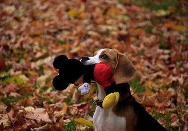
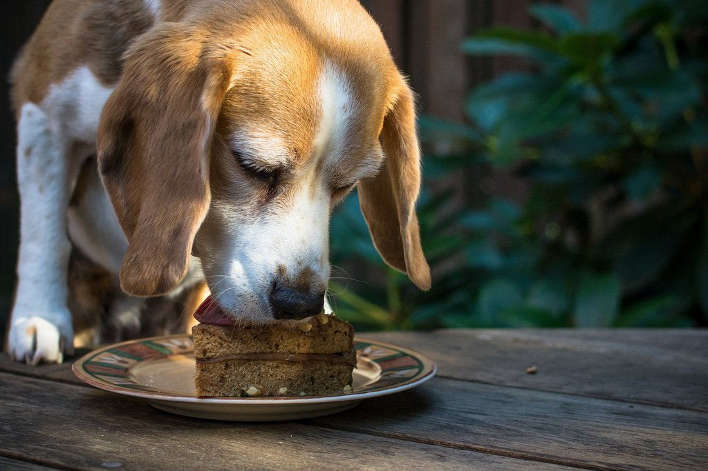

Дрессировка

Бигли требуют минимального ухода и весьма неприхотливы к условиям содержания. Короткая шерсть собаки нуждается в вычёсывании один-два раза в неделю. Для этого обычно используют щётку или резиновую перчатку. Во время линьки животного процедуру проводят чаще. На этот раз «инструментом» выступает расчёска-фурминатор, которая без труда удалит отмершие волоски и сделает внешний вид собаки более опрятным.
Купание питомца не должно стать вашей целью. Устраивать биглю водные процедуры стоит как можно реже, чтобы не смывать с шерсти защитную «плёнку». Если такая необходимость всё же возникла, используйте мягкое мыло или гипоаллергенный шампунь для собак с короткой шерстью. После принятия «ванны» вставьте в уши питомца ватные диски для удаления излишков влаги. Ликвидируйте все сквозняки, иначе животное простудится.
После прогулки достаточно протереть грязные лапы, а иногда и живот, влажной тряпкой. В дождливую погоду рекомендуется обмыть нижнюю часть корпуса бигля водой с добавлением дегтярного мыла. Не забудьте проверить подушечки лап на предмет порезов и ранок. Для смягчения грубой и потрескавшейся кожи можно втирать растительное масло. В зимнее время года, когда обледеневший асфальт посыпан реагентами и солью, можно использовать «защиту» для лап бигля: носки-налапники или ботиночки.
Для ухода за глазами необходимо приобрести в зоомагазине специальную жидкость для удаления выделений. Если они слишком обильны, а взгляд кажется мутноватым, немедленно обратитесь к ветеринару. Не стоит обходить вниманием и длинные уши бигля. Чистите их от накопившегося налёта и пыли раз в две недели.
Когти собаки должны регулярно стачиваться во время прогулок, однако когтерез в доме не помешает. В случае необходимости осторожно подровняйте когти и сгладьте острые края пилочкой. Если бигль паникует при виде инструмента, начните с одной лапы, а на следующий день – с другой. Лакомство для поощрения также не повредит.
Что касается зубов, их следует чистить раз-два в неделю с помощью щётки, кусочка бинта или насадки на палец. Не нужно использовать свою же пасту: собакам не по душе вкус и резкий запах человеческого средства для поддержания гигиены.
Питание бигля должно быть сбалансированным. Не забывайте, что эта порода склонна к полноте, а потому шанс сделать из поджарой собаки неподвижный колобок на лапках очень велик. Для кормления используйте сухие корма премиум-класса с высоким содержанием витаминов и минералов. Его суточная доза обычно указана на упаковке. Время от времени разбавляйте однообразный рацион натуральными продуктами. Обязательно давайте животному чайную ложку растительного масла, чтобы шерсть всегда сохраняла здоровый блеск.